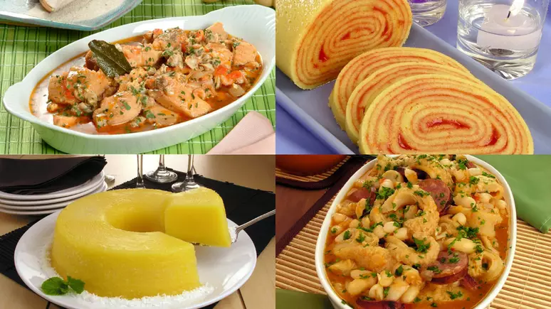
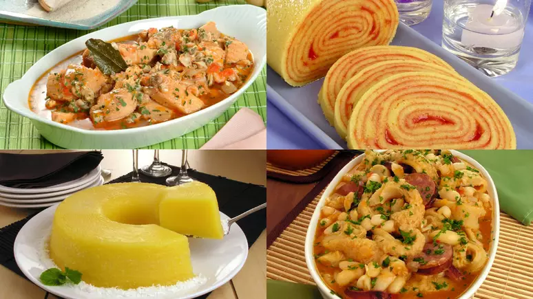

Gastronomia de Recife
Saboreie a culinária típica pernambucana em restaurantes e bares ao redor da praça
Saboreie a culinária típica pernambucana em restaurantes e bares ao redor da praça
Gastronomia: Bolo de rolo, tapioca, arrumadinho de charque, bolo Souza Leão, carne de bode e bobó de camarão. É com a culinária típica do Recife que a cidade se mostra para os seus visitantes. Com a diversidade de estabelecimentos gastronômicos, o cardápio do Recife se torna bastante variado.
Vida Noturna: Bares e pubs oferecem música ao vivo e drinks para animar a noite
Restaurantes: São muitas as opções de cardápio e locais para comer as comidas típicas da localidade